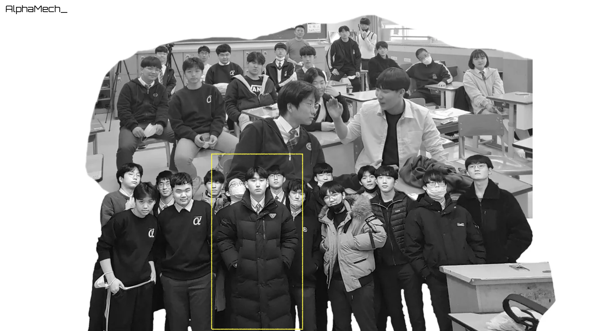

Projects and Awards
독단적으로 빛나지 않고, 팀원 모두가 빛날 수 있는 프로젝트를 합니다.
기술을 통해 세상을 이롭게 하려면, 저 혼자만의 독단적인 행동만으로는 불가능합니다. 각자의 스테이크홀더가 요구사항의 외적 요소 및 내적 요소를 전부 확인하고 이해하여 자신의 역할을 확실히 알고, 책임감을 가지면서 프로젝트에 임해야 합니다.

@ AlphaMech_ (2022 - 1)
위 Figure은 제가 효성고등학교에 재학할 때 만든 융합공학동아리 AlphaMech_의 단체사진입니다. 공학도를 꿈꾸는 학생들이 모여 발칙하고 멍청한 망상을 어떻게든 현실로 재현하기 위하여 만들어진 동아리로, 작은 양초로 무거운 스털링 엔진을 구현하거나 라즈베리파이를 활용하여 비트코인을 채굴하는 등 현실적으로 불가능한 프로젝트를 많이 진행하였습니다.
저는 아무래도 이 동아리를 이끌면서 협업의 중요성을 스스로 깨우쳤습니다. 어차피 결과는 좋지 않을테니, 모두가 각자의 역할에 충실하며 프로젝트를 이행하는 과정을 사랑하면 어떨까라는 생각에, 이때부터 소프트웨어공학을 적용하고 다이어그램을 손수 그려가면서 해야 할 스크럼들을 정리해나갔습니다.
모든 사람들이 자신이 맡은 바를 즐거워할 때 그것이 바로 살아있는 프로젝트라고 생각합니다.
저는 살아있는 프로젝트를 하기 위해 노력합니다.
- 허수아비 : 집념의 들판 (scarecrow)
2020. 3 - 2021. 9
- 코로나19로 인한 비대면 화상강의 시즌, ZOOM 화상회의 자동 접속 프로그램
- AlphaMech_ 주관, 허수아비 프로그래밍부 (임규연, 정찬하, 장문규, 변호석, 박재석)
- HTML, C/C++
-
RED-OCEAN
2020. 7 - 2020. 11
- COVID-19의 metadata와 SIR model을 이용한 감염 시뮬레이션 시스템
- 임규연, 이진서, 임유찬
- 2020년도 효성고등학교 과학논문대회 최우수상 수상 (2위)
- Python, Matlab, Processing 3, C++
-
HALF
2021. 2 - 2021. 12
- 감정들에 대한 반응을 대조할 수 있는 이차원 인공지능, 사용자의 표정을 읽고 그에 따른 감정을 추측
- 임규연, 손영준, 권도훈
- 2021년도 효성고등학교 과학논문대회 최우수상 수상 (2위)
- Python, Keras, C++, Teachable Machine, HTML
-
problemsolving
2023. 3 - 현재
- 하루 1문제 코딩테스트 루틴 및 컴퓨터공학전공생들을 위한 연습문제 배포
- 임규연
- 대부분 Python 3으로 문제풀이
-
homeautomationwitharduino
2023. 6
- 피지컬 컴퓨팅으로 구현하는 홈 오토메이션 (스마트홈)
- TEAM 16 (이호현, 이현호, 임규연, 임승기)
- 2023년도 가천대학교 소프트웨어 경진대회 SW일반부문 대상 수상 (1위)
- Arduino, C++ for HW, Port Engineering, Remote Control
-
djangoclass
2023. 9 - 2023. 12
- 개발자 내(來:미래)진(進:나아가다)설계를 위한 내(耐:견디다)진(震:역경)설계
- 2023년도 2학기 동안 진행됨 / 임규연
- 2023년도 가천대학교 아르테크네 주관 내(來:미래)진(進:나아가다)설계 프로젝트 최우수상 (1위)
- Python, Django, Flask, HTML, Javascript, Backend Framework concept
-
forum-express
2024. 2
- 게시판 양식을 직접 만들어보고 CRUD 원리를 익히기 위한 웹 프로젝트
- 2024년도 2월 동안 진행됨 / 임규연
- express.js, Node.js
-
freund
2024. 4 - 현재
- 차원 음성 인식을 적용한 LLM 모델 구현
- 2024년도 4월 부터 진행 중 / 임규연
- Python, C++, Tensorflow, whisper, llama.cpp, keras
-
operation
2024. 09 - 현재
- A regression machine that learns a dataset based on an equation created using various operators
- 2024년도 9월 부터 진행 중 / 임규연
- Python, Tensorflow, Scikit-learn ...
-
ZSL-HAR
2024. 12 - 2025. 06.
- Contrastive Representation Learning From Labeled Simple Activities for Zero-Shot Recognition of Complex Human Actions on Wearable Devices (Gyuyeon Lim and Myung-Kyu Yi)
- Paper Implementation / 임규연 (지도교수 이명규)
- IEEE ______ (IF _______)
- Python, Tensorflow, tqdm
-
ABFA
2025. 04 - 현재
- Action-Based Feature Augmentation with Multi-Kernel Temporal Convolution and Transformer for Human Activity Recognition (Gyuyeon Lim and Myung-Kyu Yi)
- Paper Implementation / 임규연 (지도교수 이명규)
- IEEE ______ (IF _______)
- Python, Tensorflow, tqdm